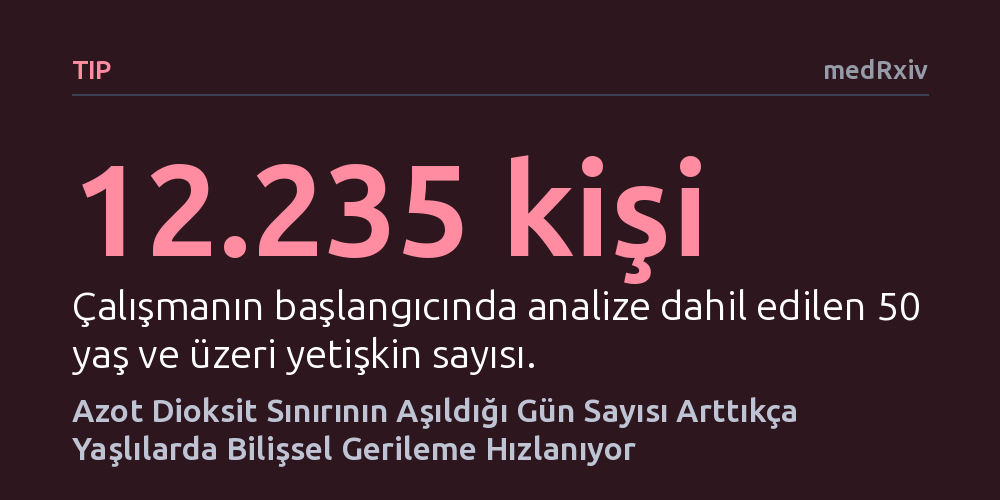

TIP · medRxiv · 2026-10-14
Araştırmacılar, yıllık ortalama kirlilik benzer olsa bile kılavuz sınırların aşıldığı günlerin zihinsel yaşlanmaya etkisini inceledi. 12 binden fazla yetişkinde, azot dioksit sınırının sık aşıldığı günlerin 14 yıllık bellek ve sözel akıcılık kaybını hızlandırdığı saptandı.
Yıllık kirlilik ortalaması güvenli görünse bile, sınırların aşıldığı tekil günlerin sıklığı beynin uzun vadeli yaşlanmasını hızlandırabilir.

Hava kirliliğinin akciğer ve kalp sağlığı üzerindeki zararları uzun süredir bilinmektedir; son yıllardaki araştırmalar ise bu kirliliğin beyin sağlığı ve zihinsel yaşlanma üzerinde de ciddi etkileri olabileceğini göstermektedir. Geleneksel hava kalitesi değerlendirmeleri çoğunlukla yıllık ortalama yoğunluklara dayanır. Ancak bu yaklaşım, yılın büyük kısmında temiz havaya sahip olan fakat belirli günlerde yoğun kirlilik dalgaları yaşayan bölgelerdeki gerçek riski gizleyebilmektedir.
Peki, yıllık ortalama hava kirliliği seviyeleri benzer olan insanlar arasında, sınır değerlerin aşıldığı günlerin sıklığı uzun vadeli zihinsel sağlığı nasıl etkiler? Araştırmacılar, Dünya Sağlık Örgütü kılavuz değerlerinin günlük bazda aşılmasının, yaşlı bireylerin bellek ve düşünme becerileri üzerindeki uzun erimli etkilerini aydınlatmak amacıyla bu çalışmayı gerçekleştirdi.
Araştırmacılar bu soruyu yanıtlamak için İngiltere Yaşlanma Boylamsal Çalışması (ELSA) kapsamındaki verileri inceledi. Çalışmaya başlangıçta 50 yaş ve üzerinde olan, toplum içinde bağımsız yaşayan 12.235 yetişkin dahil edildi. Katılımcılar 2002-2003 döneminden 2021-2023 dönemine kadar uzanan yaklaşık 20 yıllık bir zaman dilimi boyunca takip edildi.
Katılımcıların ev adresleriyle eşleştirilen gelişmiş çevresel tahmin modelleri kullanılarak azot dioksit (NO2) ile ince partikül maddelere (PM2.5 ve PM10) maruziyet hesaplandı. Her katılımcı için Dünya Sağlık Örgütü'nün belirlediği günlük kılavuz sınırların kaç gün aşıldığı saptandı. Zihinsel performans ise iki temel ölçütle takip edildi: geçmiş olayları hatırlama yeteneği olan bölümsel bellek ve kelime üretme hızını ölçen sözel akıcılık testleri. Takip süresinin 14 yıllık kesiti üzerinden bilişsel gerileme eğrileri modellendi.
Elde edilen bulgular, sınır aşımı yaşanan gün sayısının çalışmanın başlangıcındaki mevcut bellek veya sözel akıcılık düzeyleriyle ilişkili olmadığını gösterdi. Ancak 14 yıllık takip süreci incelendiğinde dikkat çekici bir fark ortaya çıktı: Yıllık ortalama hava kirliliği istatistiksel olarak hesaba katılıp eşitlendiğinde dahi, azot dioksit sınırının daha fazla aşıldığı günlere maruz kalan bireylerde zihinsel gerilemenin belirgin şekilde hızlandığı saptandı.
Azot dioksit sınır aşımı günleri bakımından üst grupta (75. yüzdelik) yer alanlar, ortanca gruptakilerle kıyaslandığında 14 yıllık bellek gerilemesinde 0,09 standart sapmalık, sözel akıcılık gerilemesinde ise 0,10 standart sapmalık ek bir düşüş yaşandı. Buna karşılık, partikül maddeler (PM2.5 ve PM10) için sınırın aşıldığı gün sayıları ile bilişsel gerileme arasında istatistiksel olarak anlamlı bir ilişki bulunmadı; bu durum etkinin özellikle gaz halindeki trafik kirleticisiyle bağlantılı olabileceğine işaret etti.
Bu sonuçlar, hava kirliliğiyle mücadelede yalnızca yıllık ortalama hedeflere odaklanmanın toplum sağlığını korumada yetersiz kalabileceğini ortaya koymaktadır. Yıllık ortalaması yasal sınırlar içinde kalan bir bölgede dahi, özellikle yoğun araç trafiğinin yol açtığı kısa süreli yüksek azot dioksit maruziyetleri, ileri yaşta bilişsel rezervlerin daha hızlı tükenmesine neden olabilmektedir.
Araştırmacılar, bu bulgunun kirliliğin sıklıkla tepe noktasına ulaştığı yerel bölgelerin ve emisyon kaynaklarının öncelikli olarak belirlenmesi için yeni bir gerekçe sunduğunu belirtmektedir. Trafiğin yoğun olduğu arterlerde anlık kirlilik dalgalarını önleyecek yerel düzenlemeler ve temiz ulaşım politikaları, sadece akciğerleri değil, yaşlanan nüfusun beyin sağlığını korumak adına da kritik bir önem taşımaktadır.